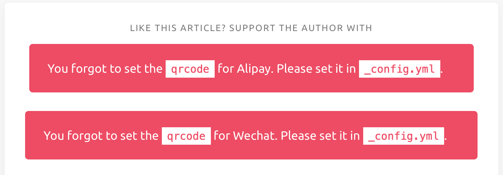
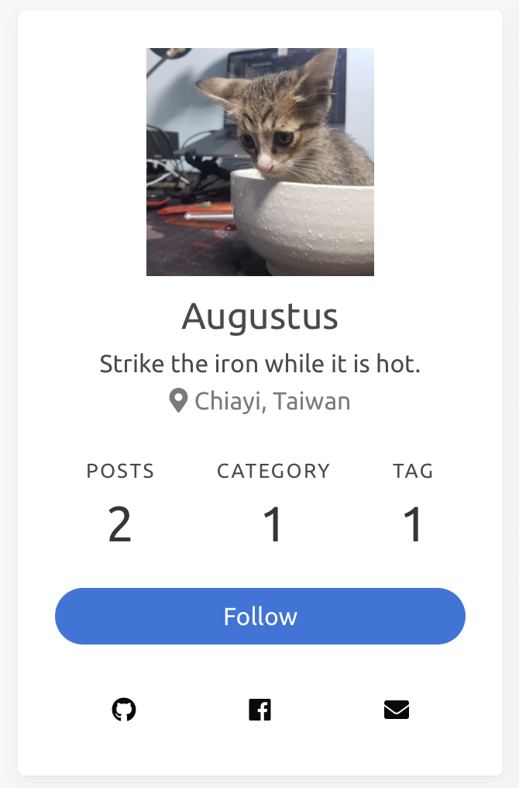
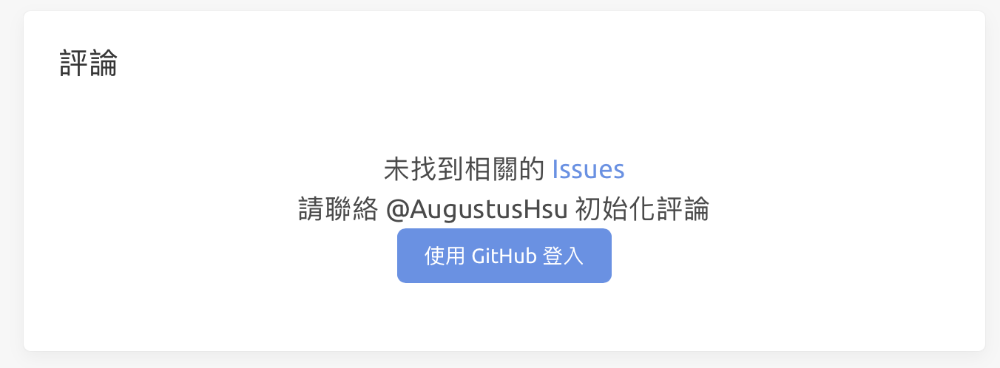
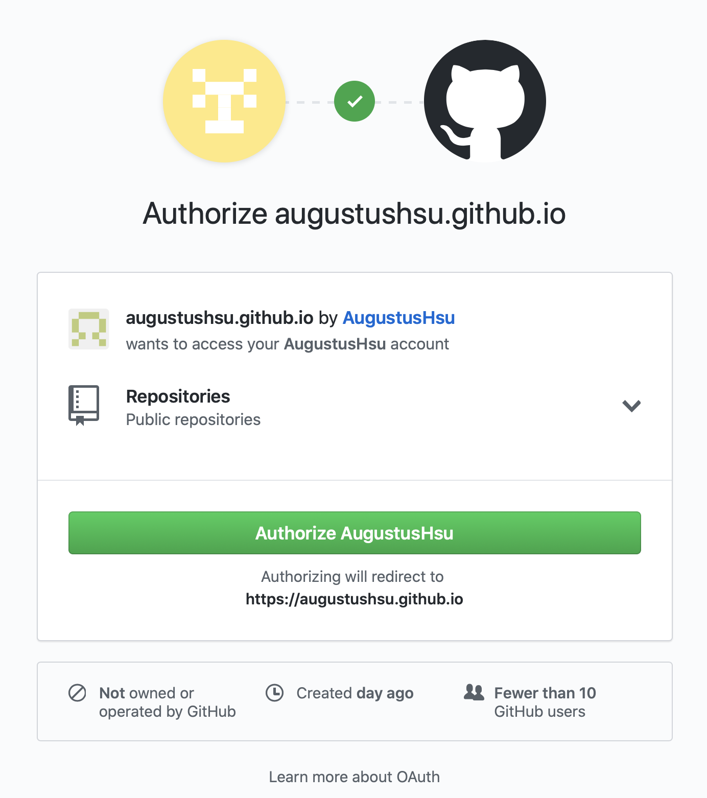

hexo系列-01 hexo簡單配置
theme下的_config.yml
前面有介紹過hexo在生成主題之後會有兩個_config.yml，這邊著重介紹在theme中的設定(絕對不是hexo原生的 _config.yml沒什麼好介紹的)
favicon&logo
首先就是favorites icon和logo~
你可以在_config.yml裡面找到：
1 | # Path or URL to the website's icon |
然後打開你的目錄XXX.github.io/public/images/裡面找到相對應的圖檔，間單的替換+更改檔名就可以放上你想要的圖片囉～
share
分享的方式Icarus提供了許多方式，預設是：
1 | # Share |
這邊我使用的是AddThis在連結中註冊帳戶，他可以透過google, Facebook或是Twitter註冊帳戶，這個網站不只有分享按鈕的JavaScript，詳細功能可以自行去探索，設定好後會得到像是這樣的code
1 | //s7.addthis.com/js/300/addthis_widget.js#pubid=xxxxxxxx |
將share那段替換成：
1 | # Share |
如此就可以直接在你的post上面看到我頁面上的分享按鈕了～
Donate
當你建置好你的網站後你可能會發現下面這樣的狀況：

這是因為你在Donate的選項中沒有設置完全，直接把它註解掉就可以解決這個問題了。
1 | # donate: |
當然如果你要設置Donate的帳戶也完全沒問題😜
highlight
接著是highlight選項，這個是程式碼區塊的顯示格式，可以透過這裡去預覽、這裡去下載。
簡單的將highlight名稱替換成你想要的樣板名稱就可以裡：
1 | # Code highlight settings |
這裏我選擇的是zenburn，理由就是我覺得好看這個暗色主題黑的剛剛好，不會想其他主題一樣太黑，或者是不夠黑。
widgets
這個選項就是調整你在頁面上所看到所有一塊塊區域的內容跟功能，第一個區塊就是網頁簡單名片：
在_config.yml的widgets第一個區塊就是相關的設定，包含像是位置、作者、還有圖片等等。
在預設中沒有的是Envelope選項，也就是上面那張圖的右下角，可以通過更改social_links來將你的信箱新增上去：
1 | social_links: |
這樣設置後，只要點擊你的信箱那個圖示，電腦會自動跳到寫信的應用程式(不過這年代還有誰會用Email來寫信😆)
其他功能我都是使用預設選項，當然其中會有像是：
1 | position: left |
這樣的選項，你可以自行調整要放在左右那一邊，當然你也可以直接註解掉整塊來取消這個功能。
Image管理
在Hexo你的發文可以透過MarkDown語法來編寫，所以在引用圖片的時候是可以透過第三方的網站來上傳圖片，再利用：
1 | ！[title](image link) |
來展示你的圖片，那如果想要將圖片放在你的網頁資料夾中的話，要怎麼引用呢？
hexo-asset-image
這邊可以直接安裝這個插件，在新增貼文的時候會同時產生一個同名的資料夾，把圖片丟進資料夾再飲用就可以了。
在XXX.github.io資料夾輸入以下命令：
1 | npm install hexo-asset-image --save |
另外在XXX.github.io中的_config.yml：
1 | post_asset_folder: true |
將它改成true，這樣在新增貼文的時候就會自動產生同名的資料夾了。
實際運用
如果你的圖片放在同名資料夾的話，在文章中要引用圖片的話，要像下面這個例子一樣：
1 | ！[title](image_name.jpg) |
無需加上資料夾的名稱，直接打你的圖片檔名就可以引用了。
不過這邊要注意的是如果你這樣打，在MarkDown編輯器中，你圖片會看不到，還有如果你是一邊啟動hexo server在編輯的話，你在網頁上圖片也是會顯示不出來，要執行過一次：
1 | hexo g |
才能正常的在localhost:4000中看到圖片。
留言設置
文章當然免不了討論問題，那在文章底部新增一個互動機制也就是留言功能，就在所難免。
在這個留言設置中，我只舉出兩種我有實際操作過的方法，其他像是gitment在Icarus列出的方法就請有興趣的朋友自行研究了。
gitalk
gitalk是使用github上面的issue功能實現的留言討論功能，所以要跟github做連結。
OAuth
OAuth是一個開放標準，允許用戶讓第三方應用存取該用戶在某一網站上儲存的私密的資源，而無需將用戶名稱和密碼提供給第三方應用。
–Wiki
也就是要授權github來儲存對話紀錄，點擊這裡來申請一個OAuth
其中Homepage URL跟Authorization callback URL請填你github.io的網址，name就簡單填個就行。
申請完會得到Client ID跟Client Secret將這兩項填入：
1 | comment: |
owner跟admin就直接填你github帳戶名稱就行。
一開始你可能會遇到像是這樣：

這時候直接按下去就會要你去登入並授權這個應用功能：
結束後你就可以在文章下方看到跟我一樣的留言區塊了。
facebook的話比較簡單，不過我之前有遇到過他的寬度不太合的狀況，所以比較推薦使用gitalk的方式來增加留言功能。
facebook的方式一樣要先授權，所以點這裡將你github.io的網址填入，接著按下取得程式碼就可以了。
再來要在_config.yml裡面把comment的設定更改成facebook:
1 | comment: |
這樣就設定完成了。
補充
你在首頁看到我的文章會看到Read More這個框框，這個是MarkDown的語法，直接在你想隱藏的段落前加上：
1 | <!--more--> |
就可以摺疊你的貼文了。
hexo系列-01 hexo簡單配置